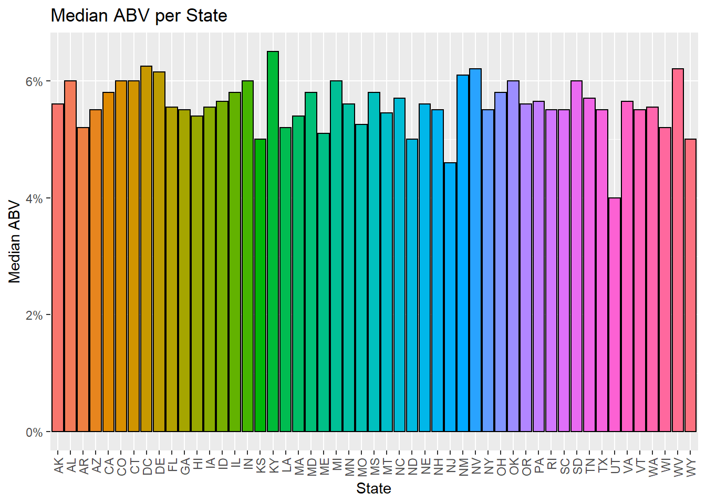
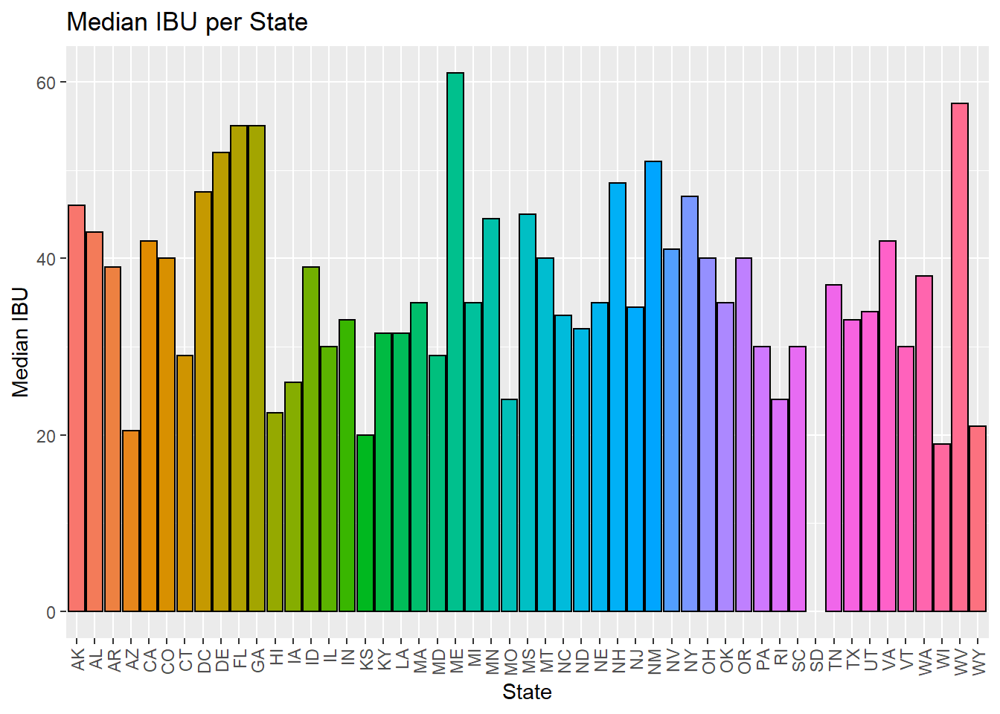
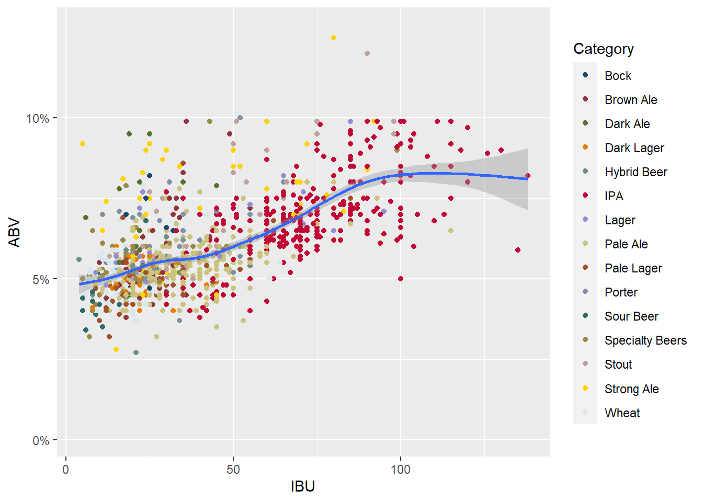
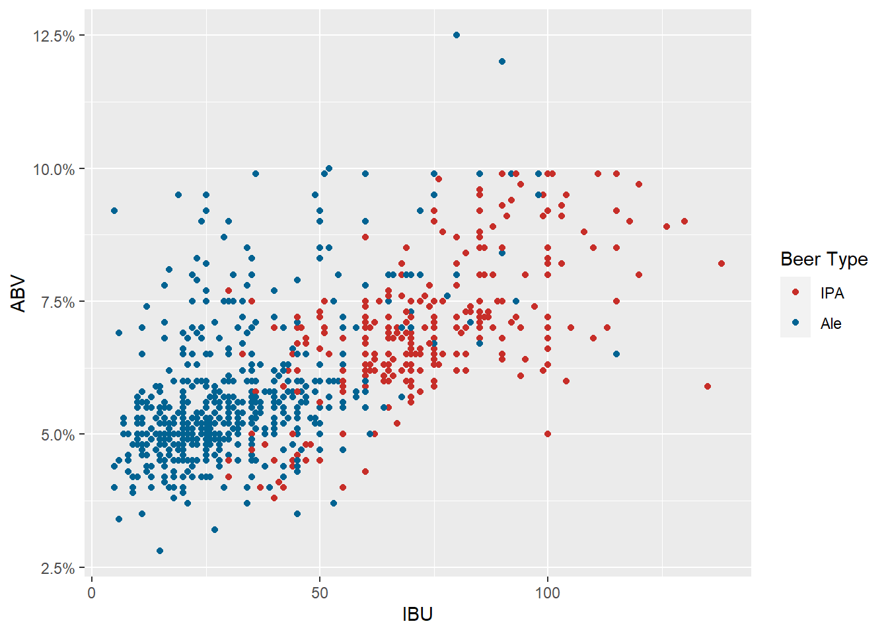
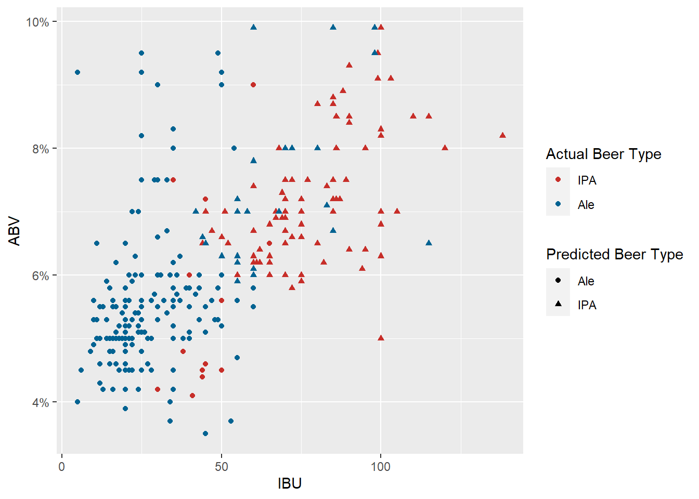
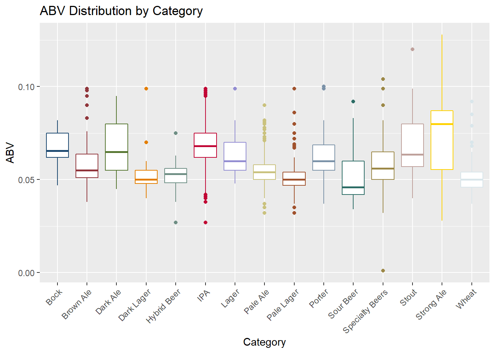
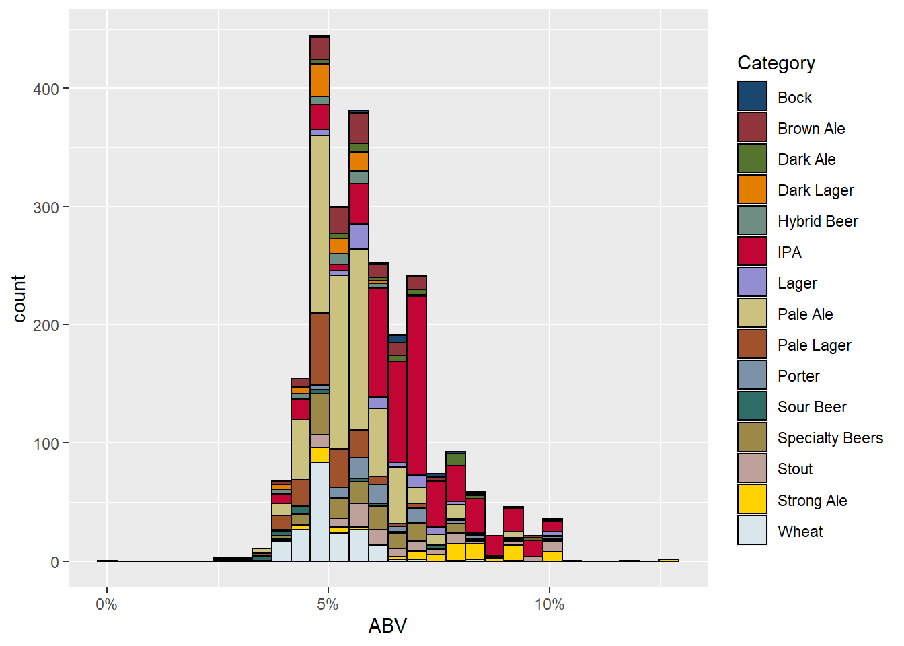

beers = read.csv("https://raw.githubusercontent.com/BivinSadler/MSDS_6306_Doing-Data-Science/Master/Unit%208%20and%209%20Case%20Study%201/Beers.csv")
breweries = read.csv("https://raw.githubusercontent.com/BivinSadler/MSDS_6306_Doing-Data-Science/Master/Unit%208%20and%209%20Case%20Study%201/Breweries.csv")
# find breweries listed twice, and determine which are the real listings
dupes = breweries %>%
group_by(Name) %>%
filter(n()>1) %>%
summarise(n=n())
#check duped breweries
#breweries[breweries$Name %in% dupes$Name,] %>% view()
# Remove white space in States
breweries = breweries %>%
mutate(State =str_trim(State))
beers = beers %>%
mutate(Style = str_trim(Style))
# swap wrong brewery id for proper ones in beers data
beers$Brewery_id[beers$Brewery_id %in% c(96,378,167,262,164,139)]## [1] 96 378 167 167 167 167 167 167 167 167 167 167 167 167 167 167 167 167 167
## [20] 167 167 167 167 167 167 167 167 167 167 167 167 167 167 167 167 262 164 139idchanges = data.frame(old=c(96,378,504,262,164,139),new=c(13,457,167,276,372,59))
for (i in 1:length(idchanges$old)) {
beers$Brewery_id[beers$Brewery_id==idchanges$old[i]] = idchanges$new[i]
}# merge beers and brewery data
bnb = beers %>%
left_join(breweries,by=c("Brewery_id" = "Brew_ID"), suffix = c(".beer",".brewery"))
head(bnb)## Name.beer Beer_ID ABV IBU Brewery_id
## 1 Pub Beer 1436 0.050 NA 409
## 2 Devil's Cup 2265 0.066 NA 178
## 3 Rise of the Phoenix 2264 0.071 NA 178
## 4 Sinister 2263 0.090 NA 178
## 5 Sex and Candy 2262 0.075 NA 178
## 6 Black Exodus 2261 0.077 NA 178
## Style Ounces Name.brewery City State
## 1 American Pale Lager 12 10 Barrel Brewing Company Bend OR
## 2 American Pale Ale (APA) 12 18th Street Brewery Gary IN
## 3 American IPA 12 18th Street Brewery Gary IN
## 4 American Double / Imperial IPA 12 18th Street Brewery Gary IN
## 5 American IPA 12 18th Street Brewery Gary IN
## 6 Oatmeal Stout 12 18th Street Brewery Gary INtail(bnb)## Name.beer Beer_ID ABV IBU Brewery_id
## 2405 Rocky Mountain Oyster Stout 1035 0.075 NA 425
## 2406 Belgorado 928 0.067 45 425
## 2407 Rail Yard Ale 807 0.052 NA 425
## 2408 B3K Black Lager 620 0.055 NA 425
## 2409 Silverback Pale Ale 145 0.055 40 425
## 2410 Rail Yard Ale (2009) 84 0.052 NA 425
## Style Ounces Name.brewery City State
## 2405 American Stout 12 Wynkoop Brewing Company Denver CO
## 2406 Belgian IPA 12 Wynkoop Brewing Company Denver CO
## 2407 American Amber / Red Ale 12 Wynkoop Brewing Company Denver CO
## 2408 Schwarzbier 12 Wynkoop Brewing Company Denver CO
## 2409 American Pale Ale (APA) 12 Wynkoop Brewing Company Denver CO
## 2410 American Amber / Red Ale 12 Wynkoop Brewing Company Denver COLooking only at breweries that have at least one recorded beer, we found the following number of breweries per state.
# breweries with no beer, probably don't matter
library(usdata)
#get state names from abbreviations
bnb_temp = bnb
bnb_temp = bnb_temp %>%
mutate(StateLN = abbr2state(State))
# find num breweries per state
brew_state = bnb_temp %>%
group_by(StateLN) %>%
summarise(n_brew = length(unique(Brewery_id)))
# concatenate state name and num breweries
brew_state_str = brew_state %>%
unite(brew_state,StateLN,n_brew,sep = " - ")
#add * to max brewery state
brew_state_str = brew_state_str %>%
mutate(brew_state = if_else(str_detect(brew_state_str$brew_state,"Colorado"),
paste(brew_state,"*",sep = ""),
brew_state))
brew_state## # A tibble: 51 × 2
## StateLN n_brew
## <chr> <int>
## 1 Alabama 3
## 2 Alaska 7
## 3 Arizona 11
## 4 Arkansas 2
## 5 California 39
## 6 Colorado 46
## 7 Connecticut 8
## 8 Delaware 2
## 9 District of Columbia 1
## 10 Florida 15
## # … with 41 more rows#write to csv file
#write.csv(brew_state_str, "breweries_per_state.csv", row.names = F)colSums(is.na(bnb_temp))## Name.beer Beer_ID ABV IBU Brewery_id Style
## 0 0 62 1005 0 0
## Ounces Name.brewery City State StateLN
## 0 0 0 0 0dim(bnb)## [1] 2410 10Nearly half the beers are missing an IBU value, will simply omit
these beers when assessing IBU values.
Only 62 beers are missing an ABV value, we generalize the 99 beer styles
to 15 categories to have a substantive number of beers per category.
Then assigning the median ABV for a category to any beers missing an ABV
within that category.
#working with the styles
beer_styles = read.csv("~/MSDS SMU/6306_Doing_Data_Science/Unit 8-9 - Case Study/BeerStyle.csv", encoding = "UTF-8")
# fix missing styles
bnb_temp$Style[bnb_temp$Beer_ID==1635] = "Scottish Ale"
bnb_temp$Style[bnb_temp$Beer_ID==2527] = "Märzen / Oktoberfest"
bnb_temp = bnb_temp[!(bnb_temp$Beer_ID%in%c(1796,1790,2210)),]
# create new column of broader category
bnb_temp = bnb_temp %>% filter(Style!="")%>%
mutate(Category = beer_styles$Category[match(Style,beer_styles$Style[row_number()])])#make 2 new abv columns, filling in missing obs with median of style and mean of category
#category
bnb_temp = bnb_temp %>%
group_by(Category) %>%
mutate(ABV.cat = if_else(is.na(ABV),median(ABV[!is.na(ABV)]),ABV)) %>%
ungroup()
#style
bnb_temp = bnb_temp %>%
group_by(Style) %>%
mutate(ABV.sty = if_else(is.na(ABV),median(ABV[!is.na(ABV)]),ABV)) %>%
ungroup()A bar chart visualizing the median ABV for each state and the top and bottom 3 states by ABV.
library(scales)##
## Attaching package: 'scales'## The following object is masked from 'package:purrr':
##
## discard## The following object is masked from 'package:readr':
##
## col_factormedBNB = bnb_temp %>%
group_by(State) %>%
summarise(median.ABV.cat = median(ABV.cat),
median.ABV.sty = median(ABV.sty),
median.IBU = median(IBU[!is.na(IBU)]))
# ABV
medBNB %>%
ggplot(aes(x = State,y = median.ABV.cat)) +
geom_col(aes(fill = State),color="black",show.legend = F) +
theme(axis.text.x = element_text(angle = 90,vjust = 0.5,hjust = 1)) +
labs(title = "Median ABV per State",
y = "Median ABV") +
scale_y_continuous(labels = percent)
medBNB %>%
slice_max(median.ABV.cat,n=3)## # A tibble: 4 × 4
## State median.ABV.cat median.ABV.sty median.IBU
## <chr> <dbl> <dbl> <dbl>
## 1 KY 0.065 0.065 31.5
## 2 DC 0.0625 0.0625 47.5
## 3 NV 0.062 0.062 41
## 4 WV 0.062 0.062 57.5medBNB %>%
slice_min(median.ABV.cat,n=3)## # A tibble: 5 × 4
## State median.ABV.cat median.ABV.sty median.IBU
## <chr> <dbl> <dbl> <dbl>
## 1 UT 0.04 0.04 34
## 2 NJ 0.046 0.046 34.5
## 3 KS 0.05 0.05 20
## 4 ND 0.05 0.05 32
## 5 WY 0.05 0.05 21A bar chart visualizing the median IBU for each state and the top and bottom 3 states by IBU.
# IBU
medBNB %>%
ggplot(aes(x = State,y = median.IBU)) +
geom_col(aes(fill = State),color="black",show.legend = F) +
theme(axis.text.x = element_text(angle = 90,vjust = 0.5,hjust = 1)) +
labs(title = "Median IBU per State",
y = "Median IBU")## Warning: Removed 1 rows containing missing values (position_stack).
medBNB %>%
slice_max(median.IBU,n=3)## # A tibble: 4 × 4
## State median.ABV.cat median.ABV.sty median.IBU
## <chr> <dbl> <dbl> <dbl>
## 1 ME 0.051 0.051 61
## 2 WV 0.062 0.062 57.5
## 3 FL 0.0555 0.0555 55
## 4 GA 0.055 0.055 55medBNB %>%
slice_min(median.IBU,n=3)## # A tibble: 3 × 4
## State median.ABV.cat median.ABV.sty median.IBU
## <chr> <dbl> <dbl> <dbl>
## 1 WI 0.052 0.052 19
## 2 KS 0.05 0.05 20
## 3 AZ 0.055 0.055 20.5All beers from breweries in South Dakota are missing their IBU values.
Here is the beer with the highest ABV, the ABV of said beer, and the state of origin.
# max abv
bnb_temp %>%
slice_max(ABV.cat) %>%
select(Name.beer,ABV.cat,StateLN)## # A tibble: 1 × 3
## Name.beer ABV.cat StateLN
## <chr> <dbl> <chr>
## 1 Lee Hill Series Vol. 5 - Belgian Style Quadrupel Ale 0.128 ColoradoHere is the beer with the highest IBU, the IBU of said beer, and the state of origin.
#max ibu
bnb_temp %>%
slice_max(IBU) %>%
select(Name.beer,IBU,StateLN)## # A tibble: 1 × 3
## Name.beer IBU StateLN
## <chr> <int> <chr>
## 1 Bitter Bitch Imperial IPA 138 Oregonbnb_temp %>%
ggplot(aes(x=IBU,y=ABV.cat)) +
geom_point(aes(color = Category)) +
geom_smooth() +
labs(y="ABV") +
scale_y_continuous(labels = percent) +
scale_color_stata()## `geom_smooth()` using method = 'gam' and formula 'y ~ s(x, bs = "cs")'## Warning: Removed 1002 rows containing non-finite values (stat_smooth).## Warning: Removed 1002 rows containing missing values (geom_point).
cor(bnb_temp$IBU[!is.na(bnb_temp$IBU)],bnb_temp$ABV.cat[!is.na(bnb_temp$IBU)])## [1] 0.6706215There appears to be a positive relationship that appears to be linear up until 100 IBU. In order to brew more bitter beers, brewers add more hops, and in order to balance the flavor they also add more malt, which results in higher ABV. Beer ABV generally tops out around 10% because most beer yeast is intolerant to high alcohol concentrations. Thus, requiring special and temperamental techniques to achieve beers with high ABV.
After combining all ale categories to a single grouping it appears as if there is a defined grouping between IPAs and non-IPA Ales.
# generalize all ale types to one category
alestyles = c("Dark Ale", "Brown Ale", "Pale Ale", "Strong Ale", "Wheat", "Stout", "Porter", "Sour Beer")
bnb_temp = bnb_temp %>%
mutate(IPAorALE = factor(if_else(Category %in% alestyles, "Ale",
if_else(Category == "IPA", "IPA", "Other"))))
# remove non ipa/ales and beers with missing ibu values
bnb_class = bnb_temp %>%
filter(IPAorALE %in% c("IPA","Ale") & !is.na(IBU)) %>%
dplyr::select(IPAorALE,ABV.cat,IBU,Beer_ID,Brewery_id)
bnb_class = droplevels(bnb_class)
bnb_class$IPAorALE = relevel(bnb_class$IPAorALE,ref = "IPA")
bnb_class %>%
ggplot(aes(x=IBU,y=ABV.cat)) +
geom_point(aes(color = IPAorALE)) +
labs(y="ABV") +
scale_y_continuous(labels = percent) +
scale_color_wsj(name="Beer Type") To illustrate the difference between IPAs and non-IPA Ales, we crafted classification models. ## k-NN model Starting with a k-NN model, we found the optimal k to be 5, and the model to be quite accurate.
library(caret)## Loading required package: lattice##
## Attaching package: 'caret'## The following object is masked from 'package:purrr':
##
## liftset.seed(4)
trainIndices = sample(1:dim(bnb_class)[1],round(.7 * dim(bnb_class)[1]))
train_bnb = bnb_class[trainIndices,]
test_bnb = bnb_class[-trainIndices,]
knn = train(IPAorALE~ABV.cat+IBU,train_bnb, method = "knn",
trControl=trainControl(method='cv',number=10))
cat(paste("The optimal k =",knn$bestTune[1],"\n\n"))## The optimal k = 5pred_knn = predict(knn,test_bnb)
confusionMatrix(pred_knn,test_bnb$IPAorALE)## Confusion Matrix and Statistics
##
## Reference
## Prediction IPA Ale
## IPA 89 30
## Ale 22 202
##
## Accuracy : 0.8484
## 95% CI : (0.806, 0.8847)
## No Information Rate : 0.6764
## P-Value [Acc > NIR] : 2.921e-13
##
## Kappa : 0.6601
##
## Mcnemar's Test P-Value : 0.3317
##
## Sensitivity : 0.8018
## Specificity : 0.8707
## Pos Pred Value : 0.7479
## Neg Pred Value : 0.9018
## Prevalence : 0.3236
## Detection Rate : 0.2595
## Detection Prevalence : 0.3469
## Balanced Accuracy : 0.8362
##
## 'Positive' Class : IPA
## After this, in an attempt to increase the accuracy of our classification we created a Naive-Bayes and a Random Forest model, then aggregated the three models into an ensemble model. ## Naive-Bayes
library(e1071)
nbay = train(IPAorALE~ABV.cat+IBU,train_bnb,method = "nb",
trControl=trainControl(method='cv',number=10))
pred_nbay = predict(nbay,test_bnb)
confusionMatrix(pred_nbay,test_bnb$IPAorALE)## Confusion Matrix and Statistics
##
## Reference
## Prediction IPA Ale
## IPA 99 38
## Ale 12 194
##
## Accuracy : 0.8542
## 95% CI : (0.8124, 0.8898)
## No Information Rate : 0.6764
## P-Value [Acc > NIR] : 3.856e-14
##
## Kappa : 0.6862
##
## Mcnemar's Test P-Value : 0.000407
##
## Sensitivity : 0.8919
## Specificity : 0.8362
## Pos Pred Value : 0.7226
## Neg Pred Value : 0.9417
## Prevalence : 0.3236
## Detection Rate : 0.2886
## Detection Prevalence : 0.3994
## Balanced Accuracy : 0.8640
##
## 'Positive' Class : IPA
## rfor = train(IPAorALE~ABV.cat+IBU,train_bnb,method = "ranger",
trControl=trainControl(method='cv',number = 10))## note: only 1 unique complexity parameters in default grid. Truncating the grid to 1 .pred_rfor = predict(rfor,test_bnb)
confusionMatrix(pred_rfor,test_bnb$IPAorALE)## Confusion Matrix and Statistics
##
## Reference
## Prediction IPA Ale
## IPA 94 26
## Ale 17 206
##
## Accuracy : 0.8746
## 95% CI : (0.8349, 0.9078)
## No Information Rate : 0.6764
## P-Value [Acc > NIR] : <2e-16
##
## Kappa : 0.7196
##
## Mcnemar's Test P-Value : 0.2225
##
## Sensitivity : 0.8468
## Specificity : 0.8879
## Pos Pred Value : 0.7833
## Neg Pred Value : 0.9238
## Prevalence : 0.3236
## Detection Rate : 0.2741
## Detection Prevalence : 0.3499
## Balanced Accuracy : 0.8674
##
## 'Positive' Class : IPA
## predictions = data.frame(knn=pred_knn, nb=pred_nbay, rf=pred_rfor)
predictions = predictions %>% rowwise() %>%
mutate(decision = factor(if_else(sum(c(knn,nb,rf)=="IPA")>1,"IPA","Ale"),levels = c("Ale","IPA")))
confusionMatrix(predictions$decision,test_bnb$IPAorALE)## Warning in confusionMatrix.default(predictions$decision, test_bnb$IPAorALE):
## Levels are not in the same order for reference and data. Refactoring data to
## match.## Confusion Matrix and Statistics
##
## Reference
## Prediction IPA Ale
## IPA 94 27
## Ale 17 205
##
## Accuracy : 0.8717
## 95% CI : (0.8316, 0.9052)
## No Information Rate : 0.6764
## P-Value [Acc > NIR] : <2e-16
##
## Kappa : 0.7137
##
## Mcnemar's Test P-Value : 0.1748
##
## Sensitivity : 0.8468
## Specificity : 0.8836
## Pos Pred Value : 0.7769
## Neg Pred Value : 0.9234
## Prevalence : 0.3236
## Detection Rate : 0.2741
## Detection Prevalence : 0.3528
## Balanced Accuracy : 0.8652
##
## 'Positive' Class : IPA
## test_bnb %>%
ggplot(aes(x=IBU,y=ABV.cat)) +
geom_point(aes(color = IPAorALE,shape=predictions$decision)) +
labs(y="ABV") +
scale_color_wsj(name="Actual Beer Type") +
scale_shape(name="Predicted Beer Type") +
scale_y_continuous(labels = percent) The ensemble model increased the accuracy by at least 2% over all three of the base models. The high accuracy of these models illustrates the difference between IPAs and other Ales with respect to IBU and ABV.
Looking to see if there is any difference between the beer categories in median ABV, we ran a Kruskal-Wallis test. The validity of the test, though, is questionable due to the lack of clarity with regard to the independence of the beer entries.
bnb_temp %>%
ggplot(aes(y = ABV.cat, x = Category, color = Category)) +
geom_boxplot(show.legend = F) +
scale_color_stata() +
labs(title="ABV Distribution by Category",
y = "ABV") +
theme(axis.text.x = element_text(angle = 45, hjust=1))
#normality & equal varaince violated anova not viable
# H_0: Dist_i = Dist_j, for all i,j in Category
# H_A: Dist_i =/= Dist_j for at least one i,j in Category
fit = kruskal.test(ABV.cat~Category,bnb_temp)
fit##
## Kruskal-Wallis rank sum test
##
## data: ABV.cat by Category
## Kruskal-Wallis chi-squared = 833.39, df = 14, p-value < 2.2e-16#Reject H_0We found overwhelming evidence to suggest that at least one pair of beer categories have differing median ABVs. Proceeding with caution, due to the concerns with independence, we runn a multiple pairwise comparison Dunn’s with a Bonferroni correction to identify which pairs have evidence of differing median ABVs.
library(dunn.test)
# for each pairwise comparison:
# H_0: Dist_i = Dist_j
# H_A: Dist_i =/= Dist_j
# bonferroni adjustment means significance is p*105 < alpha
fit_dunn = dunn.test(bnb_temp$ABV.cat,bnb_temp$Category,method = "bonferroni",wrap = F)## Kruskal-Wallis rank sum test
##
## data: x and group
## Kruskal-Wallis chi-squared = 833.3905, df = 14, p-value = 0
##
##
## Comparison of x by group
## (Bonferroni)
## Col Mean-|
## Row Mean | Bock Brown Al Dark Ale Dark Lag Hybrid B IPA
## ---------+------------------------------------------------------------------
## Brown Al | 3.351083
## | 0.0423
## |
## Dark Ale | 0.569227 -3.804986
## | 1.0000 0.0074*
## |
## Dark Lag | 5.572171 4.059934 6.673044
## | 0.0000* 0.0026* 0.0000*
## |
## Hybrid B | 4.729152 2.666657 5.336699 -0.695637
## | 0.0001* 0.4022 0.0000* 1.0000
## |
## IPA | -0.183121 -8.614057 -1.271702 -11.66211 -8.445334
## | 1.0000 0.0000* 1.0000 0.0000* 0.0000*
## |
## Lager | 1.156681 -3.449914 0.744061 -6.664155 -5.115921 2.658745
## | 1.0000 0.0294 1.0000 0.0000* 0.0000* 0.4118
## |
## Pale Ale | 4.560535 2.329633 5.812405 -3.023548 -1.548166 19.32785
## | 0.0003* 1.0000 0.0000* 0.1312 1.0000 0.0000*
## |
## Pale Lag | 6.107580 5.416657 7.810754 0.236400 0.985919 17.39832
## | 0.0000* 0.0000* 0.0000* 1.0000 1.0000 0.0000*
## |
## Porter | 1.686373 -2.661539 1.457431 -6.034901 -4.522980 3.856040
## | 1.0000 0.4084 1.0000 0.0000* 0.0003* 0.0061*
## |
## Sour Bee | 4.642602 2.614543 5.075581 -0.331614 0.259922 7.422938
## | 0.0002* 0.4691 0.0000* 1.0000 1.0000 0.0000*
## |
## Specialt | 3.329389 -0.135108 3.814035 -4.330726 -2.833953 9.237746
## | 0.0457 1.0000 0.0072* 0.0008* 0.2414 0.0000*
## |
## Stout | 0.633477 -4.928151 0.012571 -8.211560 -6.248743 1.856399
## | 1.0000 0.0000* 1.0000 0.0000* 0.0000* 1.0000
## |
## Strong A | -0.356526 -6.640576 -1.346421 -9.672357 -7.527936 -0.422022
## | 1.0000 0.0000* 1.0000 0.0000* 0.0000* 1.0000
## |
## Wheat | 6.305200 5.906208 8.153516 0.499384 1.213133 18.97266
## | 0.0000* 0.0000* 0.0000* 1.0000 1.0000 0.0000*
## Col Mean-|
## Row Mean | Lager Pale Ale Pale Lag Porter Sour Bee Specialt
## ---------+------------------------------------------------------------------
## Pale Ale | 5.932205
## | 0.0000*
## |
## Pale Lag | 8.157854 4.840957
## | 0.0000* 0.0001*
## |
## Porter | 0.789094 -5.119027 -7.494051
## | 1.0000 0.0000* 0.0000*
## |
## Sour Bee | 4.812092 1.629272 -0.533230 4.274946
## | 0.0001* 1.0000 1.0000 0.0010*
## |
## Specialt | 3.466889 -2.736316 -5.910834 2.651724 -2.749144
## | 0.0276 0.3262 0.0000* 0.4204 0.3137
## |
## Stout | -0.900098 -8.413207 -10.46510 -1.794541 -5.745286 -5.038682
## | 1.0000 0.0000* 0.0000* 1.0000 0.0000* 0.0000*
## |
## Strong A | -2.441235 -10.44116 -12.19208 -3.367846 -6.873029 -6.825119
## | 0.7684 0.0000* 0.0000* 0.0398 0.0000* 0.0000*
## |
## Wheat | 8.596456 5.614652 0.344855 7.939984 0.720224 6.465370
## | 0.0000* 0.0000* 1.0000 0.0000* 1.0000 0.0000*
## Col Mean-|
## Row Mean | Stout Strong A
## ---------+----------------------
## Strong A | -1.727789
## | 1.0000
## |
## Wheat | 11.07108 12.82887
## | 0.0000* 0.0000*
##
## alpha = 0.05
## Reject Ho if p <= alpha/259 pairs of beer categories were found to have significant evidence of differing medians. Although, as previously mentioned, the validity of this finding is questionable, and we recommend further consultation and investigation.
Comment on the summary statistics and distribution of the ABV variable.
The 5 number summary, mean, standard deviation, and histogram of beer ABV.
